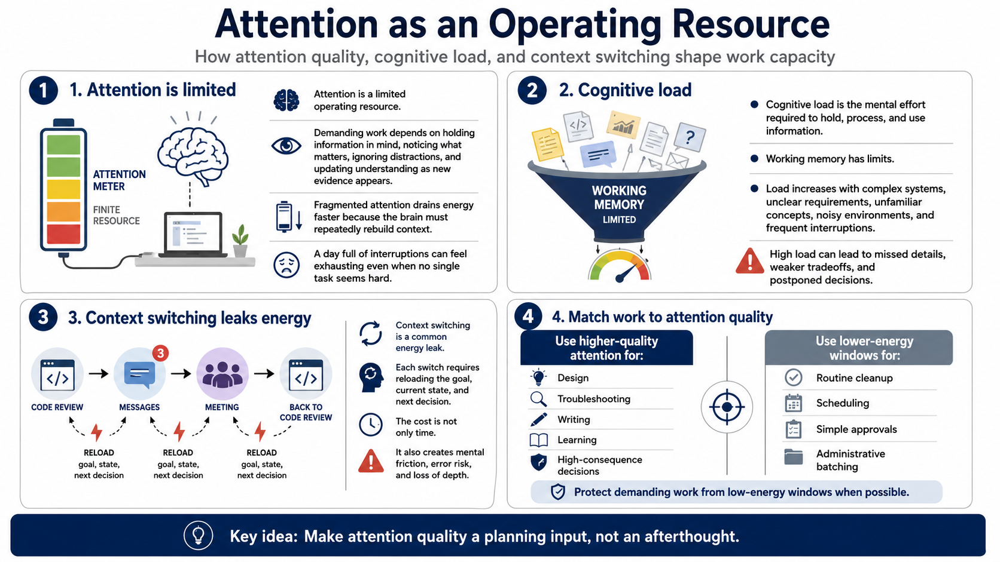

Energy, Attention, and Cognitive Load
Connecting to LMS... Progress: in progress

Narration
Attention is a limited operating resource. Demanding work depends on the ability to hold information in mind, notice what matters, ignore distractions, and update understanding as new evidence appears. When attention is fragmented, energy drains faster because the brain has to keep rebuilding context. This is why a day full of interruptions can feel exhausting even if no single task looks difficult.
Cognitive load is the mental effort required to hold, process, and use information. Working memory has limits. Complex systems, unclear requirements, unfamiliar concepts, noisy environments, and frequent interruptions all increase load. When load is high, people may miss details, make weaker tradeoffs, or postpone decisions because the work feels heavier than expected.
Context switching is a common energy leak. Moving from a code review to a message thread, then to a meeting, then back to the code review, requires repeated reorientation. Each switch asks attention to reload the goal, the current state, and the next decision. The cost is not only time. It is also mental friction, error risk, and the gradual loss of depth.
Demanding work should be protected from low-energy windows when possible. That does not mean every day will be ideal. It means matching task type to attention quality. Use higher-quality attention for design, troubleshooting, writing, learning, and decisions with consequences. Use lower-energy windows for routine cleanup, scheduling, simple approvals, and administrative batching. This makes energy a planning input rather than an afterthought.